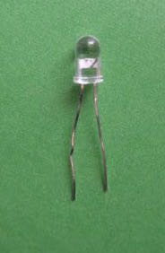
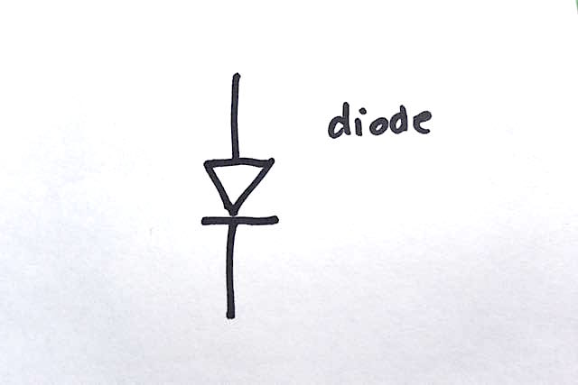

##Light Emitting Diode (LED)
An LED is a semiconductor device that emits light when a current passes through it. Most LEDs emit light in a small range of wavelenghts,
so that they have a characteristic color. We have LEDs from infrared (~890 nm) through ultraviolet (~400 nm wavelength). A specially deisgned "white" LED
emits light over the whole visible spectrum, and appears colorless to our vision.
Most of our LEDS dissipate little power - a few tens of millwatts. More powerful (and cheap) LEDs are available now, in commercial lighting, and also
in individual devices.

An LED is shown above. The long leg must be at a more positive voltage than the shorter lead in order for the
device to emit light. The electronic symbol is shown on the right. The positive terminal is called the anode, and the
negative (lower in this picture) terminal the cathode.
In the symbol, the arrow points in the direction that current flows during
usual operation of the diode.
<a href="./LED_driver01.txt">Here</a>
is a code for writing to LED with digitalWrite - full on or full off.
<a href="./LED_driver02.txt">Here</a> is code for controlling intensity of LED with analogWrite.
###RGB (red, green, blue) LEDs


Above is the four-legged RGB LED that we have. Diagrams from the [datasheet](http://www.kingbrightusa.com/images/catalog/SPEC/WP154A4SUREQBFZGC.pdf)
show details of the configuration. The three LEDs within this package have a common cathode (negative terminal). The longest lead is
the cathode. Not all RGB LEDs have this arrangement - for each type of RGB that you encounter, you will have to ascertain the arrangement of the
leads by testing or referring to the datasheet.


Above is an example of a circuit to drive an RGB LED. The three inputs are connected to three separate digital pins of the microcontroller. If you want to be able to control the intensity of each color, make sure that these pins are capable of PWM (see the pinout diagram for your microcontroller.) The resistors limit the current throgh each LED in the usual way. You may find that the blue LED is less intense - it requires a greater voltage drop than the less energetic green and red. To equalize intensity, you may reduce the resistor value for the blue (and maybe the green) LED relative to the red. Note that the resistors shown here are 1k Ohm (brown, black, red). Refer to the [resistor color code](https://www.arrow.com/en/research-and-events/articles/resistor-color-code) to decipher resistor values for the color-banded resistors.


The picture above shows a project that Rob and Daniel did in the summer of 2019 at the [Haystack](https://www.haystack-mtn.org/) Fablab with ceramic artist Vanna Ramirez. We sorked with Vanna to install four RGB LED modules, together with microcontrollers and battery, (see right-hand photo) in her pot, which has several translucent porcelain bubbles. The software slowly cycles the LEDs through the possible ranges of color, over a time of tens of minutes. Details, pictures and code on Rob's [Haystack 2019 repository](https://roberthart56.github.io/haystack2019_hart/). Here is a short [video](vanna_compressed_01.mp4).
###LED [strips.](https://www.amazon.com/s/ref=nb_sb_noss_2?url=search-alias%3Daps&field-keywords=led+strip)
###LED arrays. [Charlieplexing](https://en.wikipedia.org/wiki/Charlieplexing)
is a way that you can control N*(N-1) LEDs with
only N microcontroller ouputs. [Here's an example](http://academy.cba.mit.edu/classes/output_devices/array/hello.array.44.mp4) from "How to Make (Almost) Anything"
###POV (persistence of vision) LED arrays. [example](https://learn.adafruit.com/bike-wheel-pov-display/overview) and simpler [example](https://maker.pro/arduino/projects/arduino-pov-display)